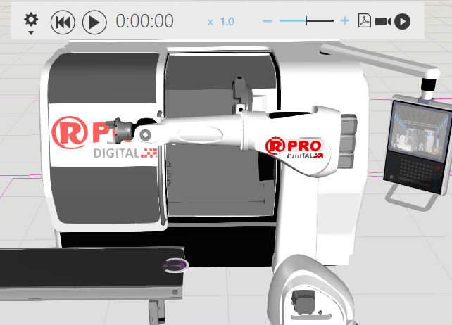
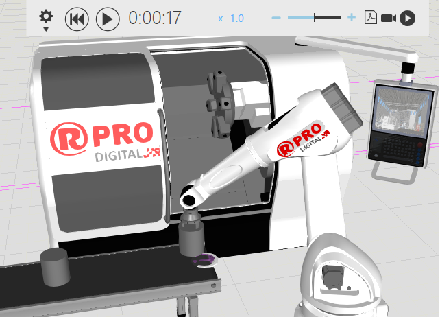
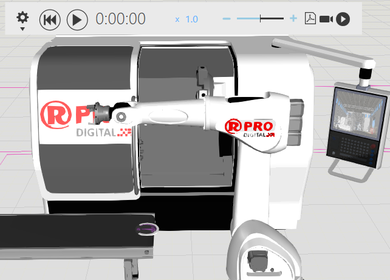
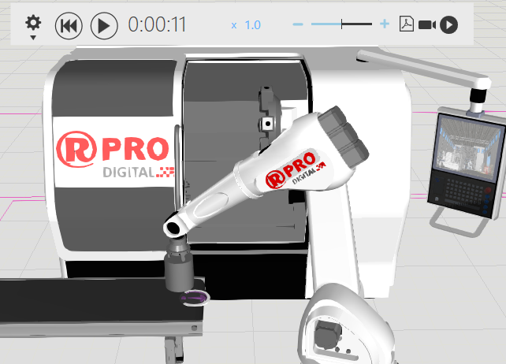
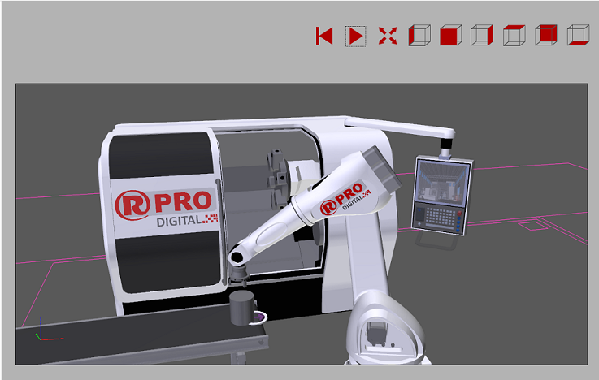

«апуск —имул€ции |
|
Ёлементы управлени€ дл€ запуска симул€ции расположены в верхней средней части трехмерного мира. Ёти элементы управлени€ позвол€ют настроить врем€ симул€ции, скорость и врем€ работы. 
огда вы запускаете симул€цию, компоненты планировки выполн€ют свои задачи. Ќапример, робот может выполн€ть свою программу, а конвейерна€ система может перемещать компоненты. 
огда вы обнул€ете симул€цию, симул€ци€ возвращаетс€ в исходное состо€ние, поэтому задачи, выполненные во врем€ симул€ции, в большинстве случаев отмен€ютс€. Ќапример, компоненты, созданные во врем€ симул€ции, будут удалены из 3D-мира, а робот вернетс€ к исходной конфигурации соединени€, котора€ была у него в начале симул€ции. 
≈сли вы хотите записать симул€цию, вы можете экспортировать ее в формате 3D PDF, видео или анимации, которую можно использовать дл€ виртуальной реальности. «апись можно начать/остановить в любой момент во врем€ симул€ции. 
аждый компонент имеет свойство "”ровеньЁкспорта в PDF", которое определ€ет, как геометри€ компонента экспортируетс€ в 3D PDF.  |